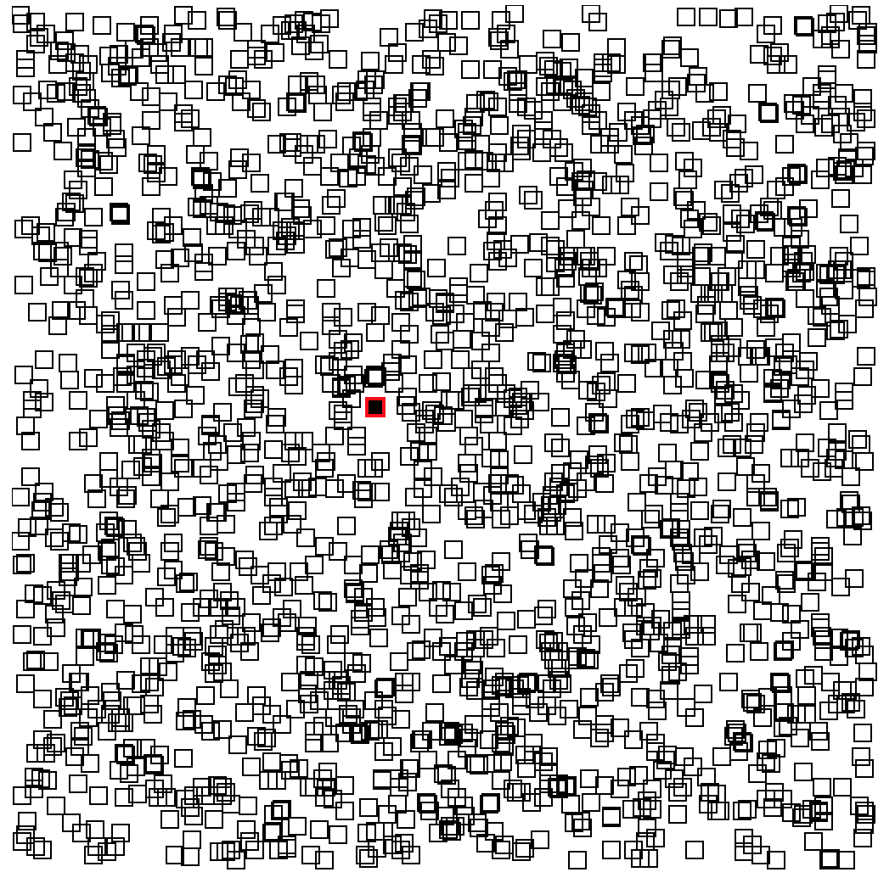

Angular and React: Make code not war
Oliver Zeigermann / @DJCordhose
Hamburg AngularJS Meetup, Wednesday, January 11, 2017
Slides: http://bit.ly/angular-react-hh
What kind of talk is this?

Objective
How to solve similar challenges in Angular 2+ and React?
Not an Objective
Another Angular vs React talk
Topic I
Application architecture
Smart/Dumb, Container/Child, Controller/View
- Dumb Component
- Reuseable
- No business logic
- No management of application state
- Smart Component
- Often Domain specific
- Generally not Reuseable
- Contains business logic
- Manages application state
Different names for the same concept
- pass data down from smart component
- events in dumb component cause actions in smart component
A simple example
The dumb component
Gets data via @Input
Signals change via @Output
@Component({...})
class SubComponent {
@Input() greeting: string;
@Output() onSend = new EventEmitter();
reset(input: HTMLInputElement) {
this.greeting = '';
input.focus();
}
send() {
this.onSend.emit(this.greeting);
}
}
At most contains simple and local UI logic
Restricted to UI state if at all
The smart component
Passes down data via greeting property
Passed down callback via onSend
@Component({
selector: 'app-root',
template: `<sub greeting={{greeting}} (onSend)="sent($event)"></sub>`
})
class AppComponent {
greeting = 'Hiho';
sent(greeting) {
console.log(`Sent: ${greeting}`);
this.greeting = `${greeting}, and you!`
}
}
Contains all (not much in this case) business logic (in sent)
Ideas are totally framework agnostic
Same thing in React
The smart component in React
Passes down data via greeting property
Passed down callback via onSend
class HelloMessage extends React.Component {
render() {
return <Greeter greeting={this.state.greeting}
onSend={(greeting) => this.sent(greeting)}/>;
}
constructor(props) {
super(props);
this.state = {greeting: this.props.greeting};
}
sent(greeting) {
console.log(`Sent: ${greeting}`);
this.setState({greeting: `${greeting}, and you!`});
}
}
Again: Contains all business logic (in sent)
The dumb component in React
Gets data via this.props.greeting (copied into local UI state)
Signals change via this.props.onSend
class Greeter extends React.Component {
render() {
return <div>...</div>);
}
send() {
this.props.onSend(this.state.greeting);
}
reset() {
this.setState({greeting: ""});
this.refs.in.focus();
}
updateModel(event) {
this.setState({greeting: event.target.value});
}
}
Template is just JavaScript, no two way binding (updateModel needed to update model)
Topic II
Advanced Change Detection
Example: SVG Boxes
Move a single Box using D'n'D
A really mean example
- Super fast using no framework at all (as only one box at a time needs update)
- Overhead introduced by framework makes application slow
- Challenge is to execute as little code as possible when updating a single model of a box
- Update happens at every mouse move event (can be hundreds per second)
- Model naturally is a flat list of boxes
- No natural hierarchy - which would make change detection easier
React
Unoptimized Version
Even for 5000 boxes no fun, really laggy

Change Detection on Level of Virtual DOM
With every move of the mouse the full application (all boxes) are re-rendered
Not as a DOM, but in a light weight structure called Virtual DOM
Then only the difference of old and new Virtual DOM effects the real DOM
Change Detection on Level of Model
shouldComponentUpdate is a lifecycle method on a component that can shortcut this procedure
it can check old model against new model
immutable data structures (immutable.js) can speed up the check
The Box Component in React
class Box extends React.Component {
shouldComponentUpdate(nextProps) {
// simple check: every change to a box creates a new object
const changed = this.props.box !== nextProps.box;
return changed;
}
render() {
const {box} = this.props;
return <rect data-id={box.id} x={box.x} y={box.y}
width="10" height="10"
stroke="black" fill="transparent" strokeWidth="1"/>;
}
}
Optimized Version
Angular Change Detection
Angular allows us to control a component's ChangeDetectionStrategy
- Skips subtrees for change detection if set to OnPush and no inputs have changed
- Requires === semantics, immutable data structures can speed that up
The Box Component in Angular
@Component({
selector: '[square-box]',
template: `
<svg:rect [attr.dataId]="box.id" [attr.x]="box.x"[attr.y]="box.y"
width="10" height="10"
stroke="black" fill="transparent" strokeWidth="1"></svg:rect>
`,
// dirty check for sub-components disabled
changeDetection: ChangeDetectionStrategy.OnPush
})
export class SquareBoxComponent {
@Input() box;
}
Performance
Similar for Angular and React w/o optimization and w/ optimization
With optimization about twice as fast
Often optimization brings more, as rendering a single box is fast anyway
Topic III
Integration of 3rd party libraries
3rd Party libraries?
There are a lot of 3rd party libraries around
They are typically not written in the framework of your choice
Examples
jQuery and jQuery plugins like Bootstrap
d3 for interactive SVGs and more abstract charting libs like nvd3
Our example: Distribution of boxes

nvd3 pie chart using d3
Challenges
- How to get access to the DOM node of the component?
- How do we tell the framework that rendering is on us?
- When exactly do we take over rendering?
- How does the 3rd party lib still get updates from state changes?
React Chart Component
class Chart extends React.Component {
render() {
// (1) we render an empty svg and remember the reference to the DOM node
return <svg ref={c => this._chart = c}></svg>
}
shouldComponentUpdate() {
// (2) once rendered react never renders again
return false;
}
componentDidMount() {
// (3) once rendered by react we create the nvd3 chart
const data = calculateDistributionData(this.props.positions);
createNvd3Chart(this._chart, data);
}
componentWillReceiveProps(nextProps) {
// (4) we still get updates of properties making it reactive
const data = calculateDistributionData(nextProps.positions);
updateNvd3Chart(this._chart, data);
}
}
Angular Chart Component
@Component({
template: ``
})
class Chart implements AfterViewInit, DoCheck {
// (1) getting access to the native DOM node
@ViewChild('chart') private chart: ElementRef;
private _differ: IterableDiffer;
constructor(differs: IterableDiffers, ref: ChangeDetectorRef) {
this._differ = differs.find(this.positions).create(null);
// (2) disables checks
ref.checkNoChanges();
}
// (3) now we are in charge of rendering
ngAfterViewInit() {
createNvd3Chart(this._chart.nativeElement, this.positions);
}
// (4) ngOnChanges won't be called, but we can handle it low level
ngDoCheck() {
const changes = this._differ.diff(this.positions);
if (changes) {
updateNvd3Chart(this._chart.nativeElement, this.positions);
}
}
}
Conclusion
- React and Angular 2 provide similar solutions to our challenges
- Learning to do one thing in one of them can teach you about the other
- Easy to switch from one to another
- If you know Angular 2 you can get started with React in hours and the other way round
Bottom Line: Angular or React?
No big architectural or technical differences
- Redux vs ngrx/store (RxJs vs Redux connect)
- EventEmitters vs Callbacks
- Router very similar
Boils down to
- Personal taste and history
- Large vs Small API Surface
- Choices vs Full Stack / Batteries Included
- Who do you Trust and which Community do you sympathize with?